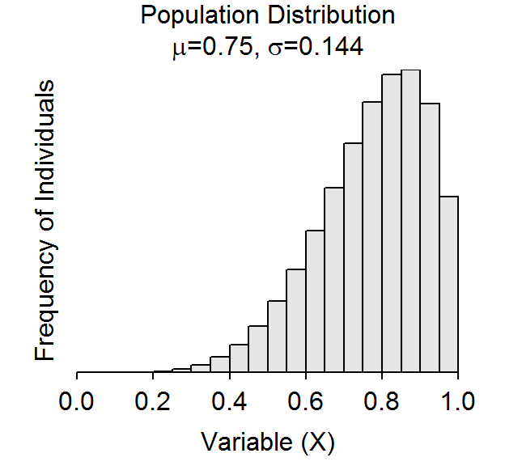
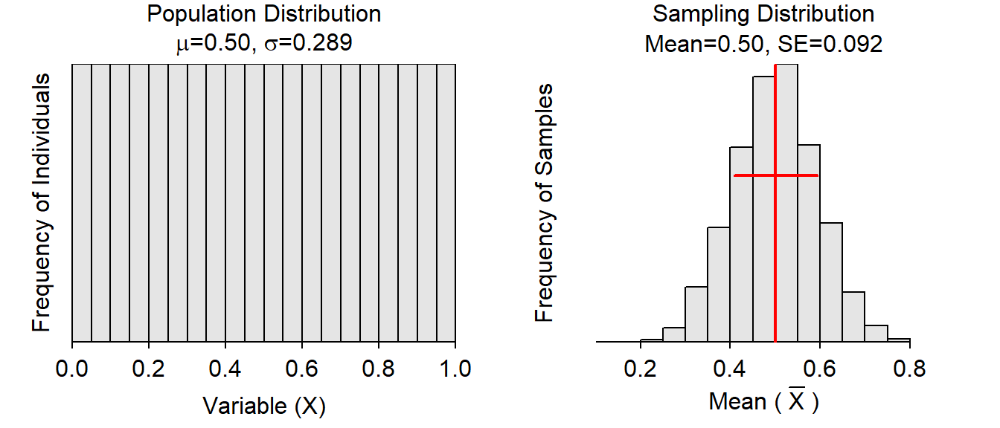

The Central Limit Theorem (CLT), the specifics of which in your module preparation notes, provides a mechanism for understanding what the sampling distribution of the sample means looks like. In this exercise, you will first identify what the CLT says the shape, center, and dispersion of the sampling distribution of sample means should look like for different sample sizes (n) from the known population shown below.

| Expected from CLT | |||
|---|---|---|---|
| Normal? | Center | Dispersion | |
| n=10 | |||
| n=25 | |||
| n=50 | |||
The sampling distribution of the sample means can be simulated by computing the means from many repeated samples from a population. The cltSim() function (with no arguments) efficiently computes sample means from many samples taken from a known population. The plots below were created with cltSim(). The histogram on the left below is the known population distribution (with μ & &sigma as shown). The histogram on the right is the distribution of sample means from 5000 samples of size n from the known population (i.e., a simulated sampling distribution). 
In RStudio, a gear icon will be in the upper-left corner of this plot that will open a dialog box that allows you to change two shape parameters to alter the known population distribution and to modify n. The population shown above uses shape1=6 and shape2=2. You should set those two sliders to those values and make sure that the population distribution (left plot) matches the population further above.
Observed from cltSim()
|
|||
|---|---|---|---|
| Normal? | Center | Dispersion | |
| n=10 | |||
| n=25 | |||
| n=50 | |||
Evidence to support (or not) the CLT can be obtained by comparing what you expected to see (based on the CLT) for the sampling distribution of sample means to what you actually observed in the simulated disributions.